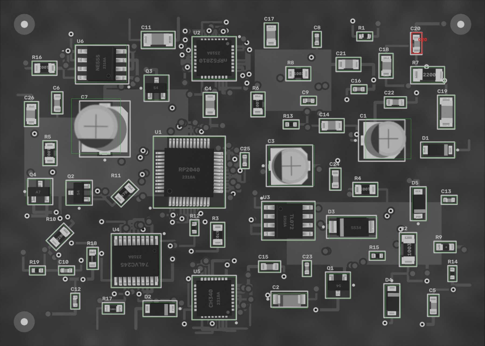
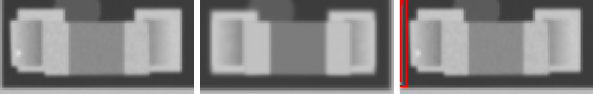

FAIL
2026-10-07 10:02:17 · позиций 60 · FAIL 1 · аномалий вне деталей 0 · невязка фидуциалов None мм · ECC 0.9933

Кроп: живая плата (выровнена) | эталон (жёлтое — метка полярности,
синее — место метки при 180°) | карта отклонений σ.
MISSING — корпус не найден; MISMATCH — на месте не то, что в эталоне (голые площадки, другая деталь,
повреждение); POLARITY — развёрнута на 180° / метка не там; SHIFT / ROTATED — вне допуска;
ANOMALY — локальное отклонение от golden (мост, шарик, лишний припой, посторонний предмет).
| C20 4u7 · 0603 | FAIL ANOMALY |  ncc 0.934 · ncc_thr 0.6 · mad 6.6 · mad_thr 8.3 · dx_mm -0.093 · dy_mm 0.023 · dtheta_deg -0.0 · anomaly_px 58 |
| C1 47u · CP_Elec_5x5.8 | PASS | ncc 0.995 · ncc_thr 0.6 · mad 4.7 · mad_thr 17.6 · mark_ncc {'0': 0.994, '180': -0.425} · dx_mm 0.0 · dy_mm -0.023 · dtheta_deg -0.0 · anomaly_px 0 |
| C10 1u · 0402 | PASS | ncc 0.941 · ncc_thr 0.6 · mad 8.9 · mad_thr 11.7 · dx_mm -0.07 · dy_mm 0.0 · dtheta_deg -0.0 · anomaly_px 0 |
| C11 10n · 1206 | PASS | ncc 0.955 · ncc_thr 0.6 · mad 4.5 · mad_thr 7.9 · dx_mm 0.023 · dy_mm 0.023 · dtheta_deg -0.0 · anomaly_px 0 |
| C12 100n · 0402 | PASS | ncc 0.968 · ncc_thr 0.6 · mad 5.0 · mad_thr 9.8 · dx_mm -0.023 · dy_mm -0.023 · dtheta_deg 2.0 · anomaly_px 0 |
| C13 4u7 · 0402 | PASS | ncc 0.908 · ncc_thr 0.6 · mad 7.7 · mad_thr 12.3 · dx_mm 0.023 · dy_mm -0.023 · dtheta_deg 2.0 · anomaly_px 0 |
| C14 10u · 0805 | PASS | ncc 0.962 · ncc_thr 0.6 · mad 5.4 · mad_thr 9.0 · dx_mm -0.047 · dy_mm -0.023 · dtheta_deg -0.0 · anomaly_px 0 |
| C15 1u · 0603 | PASS | ncc 0.962 · ncc_thr 0.6 · mad 7.0 · mad_thr 9.4 · dx_mm 0.0 · dy_mm 0.0 · dtheta_deg -0.0 · anomaly_px 0 |
| C16 100n · 0402 | PASS | ncc 0.969 · ncc_thr 0.6 · mad 6.1 · mad_thr 9.6 · dx_mm 0.047 · dy_mm 0.0 · dtheta_deg -0.0 · anomaly_px 0 |
| C17 10n · 0805 | PASS | ncc 0.952 · ncc_thr 0.6 · mad 4.9 · mad_thr 8.0 · dx_mm 0.0 · dy_mm -0.023 · dtheta_deg -0.0 · anomaly_px 0 |
| C18 10u · 0805 | PASS | ncc 0.965 · ncc_thr 0.6 · mad 4.6 · mad_thr 8.0 · dx_mm -0.047 · dy_mm 0.023 · dtheta_deg -2.0 · anomaly_px 0 |
| C19 4u7 · 1206 | PASS | ncc 0.98 · ncc_thr 0.6 · mad 4.1 · mad_thr 8.1 · dx_mm 0.0 · dy_mm 0.0 · dtheta_deg -0.0 · anomaly_px 0 |
| C2 Tantalum_Case-A · Tantalum_Case-A | PASS | ncc 0.97 · ncc_thr 0.6 · mad 4.4 · mad_thr 24.2 · mark_ncc {'0': 0.995, '180': 0.738} · dx_mm -0.023 · dy_mm 0.0 · dtheta_deg -0.0 · anomaly_px 0 |
| C21 1u · 0805 | PASS | ncc 0.97 · ncc_thr 0.6 · mad 4.6 · mad_thr 8.0 · dx_mm 0.023 · dy_mm 0.023 · dtheta_deg -0.0 · anomaly_px 0 |
| C22 4u7 · 0603 | PASS | ncc 0.962 · ncc_thr 0.6 · mad 5.3 · mad_thr 9.1 · dx_mm -0.047 · dy_mm -0.023 · dtheta_deg -0.0 · anomaly_px 0 |
| C23 22p · 0402 | PASS | ncc 0.954 · ncc_thr 0.6 · mad 7.1 · mad_thr 11.2 · dx_mm 0.047 · dy_mm 0.0 · dtheta_deg -0.0 · anomaly_px 0 |
| C24 1u · 0603 | PASS | ncc 0.969 · ncc_thr 0.6 · mad 6.0 · mad_thr 8.8 · dx_mm 0.0 · dy_mm 0.0 · dtheta_deg -0.0 · anomaly_px 0 |
| C25 10n · 0402 | PASS | ncc 0.977 · ncc_thr 0.6 · mad 6.7 · mad_thr 10.5 · dx_mm -0.023 · dy_mm 0.0 · dtheta_deg -0.0 · anomaly_px 0 |
| C26 100n · 0805 | PASS | ncc 0.961 · ncc_thr 0.6 · mad 5.5 · mad_thr 8.1 · dx_mm 0.047 · dy_mm 0.0 · dtheta_deg -0.0 · anomaly_px 0 |
| C3 220u · CP_Elec_5x5.8 | PASS | ncc 0.991 · ncc_thr 0.6 · mad 4.1 · mad_thr 8.3 · mark_ncc {'0': 0.992, '180': 0.158} · dx_mm -0.023 · dy_mm 0.07 · dtheta_deg -0.0 · anomaly_px 0 |
| C4 22p · 0805 | PASS | ncc 0.971 · ncc_thr 0.6 · mad 4.9 · mad_thr 8.6 · dx_mm 0.023 · dy_mm 0.0 · dtheta_deg -0.0 · anomaly_px 0 |
| C5 22p · 0603 | PASS | ncc 0.967 · ncc_thr 0.6 · mad 6.4 · mad_thr 8.5 · dx_mm -0.023 · dy_mm 0.0 · dtheta_deg -0.0 · anomaly_px 0 |
| C6 1u · 0603 | PASS | ncc 0.943 · ncc_thr 0.6 · mad 7.1 · mad_thr 9.0 · dx_mm -0.047 · dy_mm 0.047 · dtheta_deg -0.0 · anomaly_px 0 |
| C7 100u · CP_Elec_6.3x7.7 | PASS | ncc 0.998 · ncc_thr 0.6 · mad 2.3 · mad_thr 8.8 · mark_ncc {'0': 0.997, '180': -0.07} · dx_mm -0.023 · dy_mm 0.0 · dtheta_deg -0.0 · anomaly_px 0 |
| C8 10u · 0402 | PASS | ncc 0.966 · ncc_thr 0.6 · mad 6.0 · mad_thr 10.1 · dx_mm 0.023 · dy_mm 0.0 · dtheta_deg -0.0 · anomaly_px 0 |
| C9 22p · 0402 | PASS | ncc 0.944 · ncc_thr 0.6 · mad 7.2 · mad_thr 11.4 · dx_mm -0.047 · dy_mm 0.023 · dtheta_deg -2.0 · anomaly_px 0 |
| D1 SOD-123 · SOD-123 | PASS | ncc 0.995 · ncc_thr 0.6 · mad 1.0 · mad_thr 6.9 · mark_ncc {'0': 0.821, '180': 0.253} · dx_mm 0.047 · dy_mm -0.023 · dtheta_deg -0.0 · anomaly_px 0 |
| D2 SOD-123 · SOD-123 | PASS | ncc 0.993 · ncc_thr 0.6 · mad 1.1 · mad_thr 7.1 · mark_ncc {'0': 0.981, '180': 0.058} · dx_mm 0.0 · dy_mm 0.0 · dtheta_deg -0.0 · anomaly_px 0 |
| D3 SMA · SMA | PASS | ncc 0.992 · ncc_thr 0.6 · mad 0.9 · mad_thr 6.7 · mark_ncc {'0': 0.938, '180': 0.062} · dx_mm 0.023 · dy_mm -0.047 · dtheta_deg -0.0 · anomaly_px 0 |
| D4 SOD-123 · SOD-123 | PASS | ncc 0.992 · ncc_thr 0.6 · mad 1.0 · mad_thr 6.9 · mark_ncc {'0': 0.892, '180': 0.019} · dx_mm 0.0 · dy_mm 0.0 · dtheta_deg -0.0 · anomaly_px 0 |
| D5 SOD-123 · SOD-123 | PASS | ncc 0.994 · ncc_thr 0.6 · mad 0.8 · mad_thr 6.9 · mark_ncc {'0': 0.925, '180': 0.068} · dx_mm -0.023 · dy_mm 0.0 · dtheta_deg -0.0 · anomaly_px 0 |
| Q1 S4 · SOT-23 | PASS | ncc 0.976 · ncc_thr 0.6 · ncc_180 0.332 · mad 1.1 · mad_thr 6.9 · mad_180 19.6 · dx_mm 0.0 · dy_mm 0.0 · dtheta_deg -0.0 · anomaly_px 0 |
| Q2 S4 · SOT-23 | PASS | ncc 0.981 · ncc_thr 0.6 · ncc_180 0.489 · mad 0.9 · mad_thr 6.9 · mad_180 2.7 · dx_mm 0.023 · dy_mm 0.023 · dtheta_deg -0.0 · anomaly_px 0 |
| Q3 S4 · SOT-23 | PASS | ncc 0.973 · ncc_thr 0.6 · ncc_180 0.421 · mad 1.3 · mad_thr 7.1 · mad_180 5.6 · dx_mm -0.023 · dy_mm 0.0 · dtheta_deg -0.0 · anomaly_px 0 |
| Q4 A7 · SOT-23 | PASS | ncc 0.944 · ncc_thr 0.6 · ncc_180 0.692 · mad 1.3 · mad_thr 7.0 · mad_180 7.4 · dx_mm -0.07 · dy_mm 0.0 · dtheta_deg -0.0 · anomaly_px 0 |
| R1 0R · 0402 | PASS | ncc 0.972 · ncc_thr 0.6 · mad 8.4 · mad_thr 17.2 · dx_mm -0.07 · dy_mm 0.047 · dtheta_deg -2 · anomaly_px 0 |
| R10 220 · 0805 | PASS | ncc 0.954 · ncc_thr 0.6 · mad 6.1 · mad_thr 9.4 · dx_mm 0.07 · dy_mm 0.0 · dtheta_deg -0.0 · anomaly_px 0 |
| R11 4k7 · 0805 | PASS | ncc 0.954 · ncc_thr 0.6 · mad 5.4 · mad_thr 10.1 · dx_mm 0.0 · dy_mm -0.023 · dtheta_deg -0.0 · anomaly_px 0 |
| R12 220 · 0402 | PASS | ncc 0.971 · ncc_thr 0.6 · mad 8.4 · mad_thr 18.5 · dx_mm 0.0 · dy_mm 0.023 · dtheta_deg -0.0 · anomaly_px 0 |
| R13 1k · 0402 | PASS | ncc 0.991 · ncc_thr 0.6 · mad 6.9 · mad_thr 17.3 · dx_mm -0.023 · dy_mm 0.0 · dtheta_deg -0.0 · anomaly_px 0 |
| R14 220 · 0402 | PASS | ncc 0.984 · ncc_thr 0.6 · mad 8.5 · mad_thr 16.0 · dx_mm -0.047 · dy_mm 0.0 · dtheta_deg -0.0 · anomaly_px 0 |
| R15 100k · 0402 | PASS | ncc 0.995 · ncc_thr 0.6 · mad 4.7 · mad_thr 18.2 · dx_mm 0.0 · dy_mm 0.0 · dtheta_deg -0.0 · anomaly_px 0 |
| R16 10k · 0805 | PASS | ncc 0.953 · ncc_thr 0.6 · mad 4.5 · mad_thr 8.8 · dx_mm -0.093 · dy_mm 0.023 · dtheta_deg -0.0 · anomaly_px 0 |
| R17 1k · 0603 | PASS | ncc 0.975 · ncc_thr 0.6 · mad 5.6 · mad_thr 9.8 · dx_mm 0.023 · dy_mm 0.023 · dtheta_deg -0.0 · anomaly_px 0 |
| R18 220 · 0603 | PASS | ncc 0.972 · ncc_thr 0.6 · mad 5.2 · mad_thr 9.8 · dx_mm -0.023 · dy_mm -0.023 · dtheta_deg -0.0 · anomaly_px 0 |
| R19 220 · 0402 | PASS | ncc 0.99 · ncc_thr 0.6 · mad 6.8 · mad_thr 15.5 · dx_mm -0.023 · dy_mm 0.0 · dtheta_deg -0.0 · anomaly_px 0 |
| R2 100k · 1206 | PASS | ncc 0.948 · ncc_thr 0.6 · mad 4.0 · mad_thr 8.8 · dx_mm 0.0 · dy_mm 0.047 · dtheta_deg -0.0 · anomaly_px 0 |
| R3 4k7 · 0805 | PASS | ncc 0.957 · ncc_thr 0.6 · mad 4.8 · mad_thr 9.6 · dx_mm 0.0 · dy_mm 0.0 · dtheta_deg -0.0 · anomaly_px 0 |
| R4 1k · 0805 | PASS | ncc 0.955 · ncc_thr 0.6 · mad 6.4 · mad_thr 9.7 · dx_mm 0.047 · dy_mm 0.0 · dtheta_deg -0.0 · anomaly_px 0 |
| R5 10k · 0805 | PASS | ncc 0.95 · ncc_thr 0.6 · mad 5.5 · mad_thr 9.5 · dx_mm -0.047 · dy_mm 0.0 · dtheta_deg -0.0 · anomaly_px 0 |
| R6 1k · 0805 | PASS | ncc 0.952 · ncc_thr 0.6 · mad 5.5 · mad_thr 9.7 · dx_mm -0.047 · dy_mm 0.023 · dtheta_deg -0.0 · anomaly_px 0 |
| R7 220 · 1206 | PASS | ncc 0.932 · ncc_thr 0.6 · mad 4.8 · mad_thr 8.7 · dx_mm 0.07 · dy_mm -0.047 · dtheta_deg -0.0 · anomaly_px 0 |
| R8 100k · 0805 | PASS | ncc 0.954 · ncc_thr 0.6 · mad 6.1 · mad_thr 9.9 · dx_mm 0.0 · dy_mm 0.0 · dtheta_deg -0.0 · anomaly_px 0 |
| R9 0R · 0603 | PASS | ncc 0.976 · ncc_thr 0.6 · mad 5.4 · mad_thr 9.8 · dx_mm -0.047 · dy_mm 0.0 · dtheta_deg -0.0 · anomaly_px 0 |
| U1 RP2040 · LQFP-48 | PASS | ncc 0.864 · ncc_thr 0.6 · mad 2.2 · mad_thr 7.6 · mark_ncc {'0': 0.978, '90': 0.187, '180': 0.118, '270': 0.111} · dx_mm -0.023 · dy_mm 0.047 · dtheta_deg -0.0 · anomaly_px 0 |
| U2 nRF52810 · QFN-32 | PASS | ncc 0.947 · ncc_thr 0.6 · mad 1.2 · mad_thr 7.3 · mark_ncc {'0': 0.989, '90': 0.078, '180': 0.138, '270': 0.192} · dx_mm 0.023 · dy_mm 0.047 · dtheta_deg -0.0 · anomaly_px 0 |
| U3 TL072 · SOIC-8 | PASS | ncc 0.944 · ncc_thr 0.6 · mad 0.9 · mad_thr 7.2 · mark_ncc {'0': 0.976, '180': 0.12} · dx_mm 0.0 · dy_mm -0.023 · dtheta_deg -0.0 · anomaly_px 0 |
| U4 74LVC245 · TSSOP-20 | PASS | ncc 0.919 · ncc_thr 0.6 · mad 2.3 · mad_thr 7.4 · mark_ncc {'0': 0.964, '180': 0.205} · dx_mm 0.0 · dy_mm -0.023 · dtheta_deg -0.0 · anomaly_px 0 |
| U5 CH340 · QFN-32 | PASS | ncc 0.925 · ncc_thr 0.6 · mad 2.2 · mad_thr 7.6 · mark_ncc {'0': 0.991, '90': 0.174, '180': 0.169, '270': 0.105} · dx_mm -0.023 · dy_mm -0.023 · dtheta_deg -0.0 · anomaly_px 0 |
| U6 NE555 · SOIC-8 | PASS | ncc 0.929 · ncc_thr 0.6 · mad 2.3 · mad_thr 7.4 · mark_ncc {'0': 0.955, '180': 0.124} · dx_mm 0.023 · dy_mm -0.023 · dtheta_deg -0.0 · anomaly_px 0 |